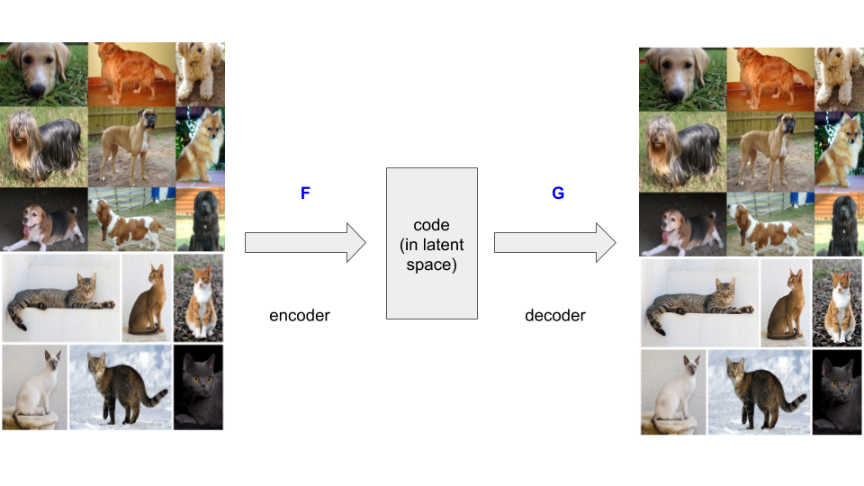
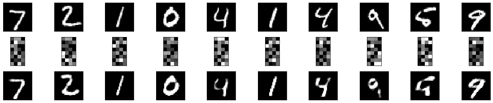
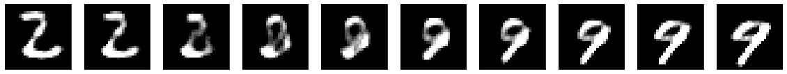

class: center, middle, title-slide count: false # Module 9 ## Unsupervised learning ## Autoencoders <br/><br/> .bold[Marc Lelarge] --- # Overview of the course: 1- .grey[Course overview: machine learning pipeline] 2- .grey[PyTorch tensors and automatic differentiation] 3- .grey[Classification with deep learning] 4- .grey[Convolutional neural networks] 5- .grey[Embedding layers and dataloaders] 6- Unsupervised learning: auto-encoders and generative adversarial networks * .red[Deep learning architectures] - in PyTorch: recap! --- # Autoencoders (AE) ## practicals: denoising with AE --- # Autoencoders Autoencoders are used to learn compressed data representation in an .red[unsupervised manner]. Autoencoders can be seen as a simple example of .red[self-supervised learning]: the data provides the supervision! An autoencoder maps a space to itself and is [close to] the identity on the data. -- count: false .center[  ] Dimension reduction can be achieved with an autoencoder composed of an encoder $F$ from the original space to a latent space, and a decoder $G$ to map back to the original space. If the latent space is of lower dimension, the autoencoder has to capture a "good" representation of the data. --- # Autoencoders in PyTorch The simplest possible autoencoder with a single fully-connected neural layer as encoder and as decoder: ``` class AutoEncoder(nn.Module): def __init__(self, input_dim, encoding_dim): super(AutoEncoder, self).__init__() self.encoder = nn.Linear(input_dim, encoding_dim) self.decoder = nn.Linear(encoding_dim, input_dim) def forward(self, x): encoded = F.relu(self.encoder(x)) decoded = self.decoder(encoded) return decoded ``` -- count: false After training, we obtain: .center[  ] --- # Representation learning with autoencoders To get an intuition of the latent representation, we can pick two samples $x$ and $x'$ and interpolate samples along the line in the latent space: the line bewteen the codes obtained by the encoder $F$ for $x$ and $x'$ is defined by: for $\alpha\in [0,1]$ $$ (1-\alpha)F(x) + \alpha F(x'). $$ We use the decoder $G$ in order to get back in the original space from this embeddding in the latent space: $$ G((1-\alpha)F(x) + \alpha F(x')) $$ -- count: false Interpolating between digits two and nine: .center[  ] --- # .grey[Autoencoders (AE)] ## [practicals: denoising with AE](https://github.com/dataflowr/notebooks/blob/master/Module9/09_AE_NoisyAE.ipynb) --- class: end-slide, center count: false The end.